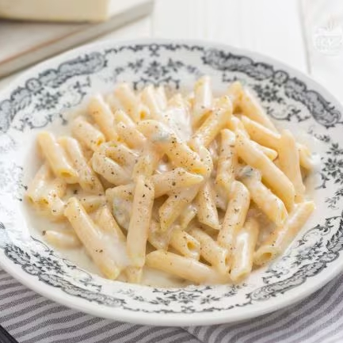

Four Cheeses Pasta

Description
This creamy dish is perfect for cold winter days.
Ingredients
(4 servings)
- 400 g penne (or other pasta)
- 1 yellow pepper
- 100 g gorgonzola
- 80 g parmigiano
- 80 g taleggio
- 80 g brie
- 20 g butter
- 4 spoons of cream
- 1 glass of milk
- Nutmeg
- Black pepper
Steps
- Put on the heat a pot with water; when it boils, put the pasta in it.
- In the meantime, cut the yellow pepper in small pieces, and let some butter melt in a pan.
- Insert the pepper in the pan, cook for 2 minutes, then add the milk.
- Cut the gorgonzola into pieces and add it to the pan.
- Cut the taleggio and the brie into pieces and add them as well; if needed, add some milk.
- Add some nutmeg (if you like it) and let the cheeses melt on low heat, while the pasta cooks.
- When the pasta is almost done, add the cream and turn the heat to medium. Drain the pasta directly in the sauce.
- Off heat, add the parmigiano and stir the pasta well, so that it mixes with the sauce.